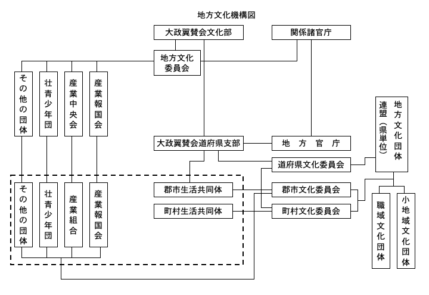

今日、国民文化の向上といふ問題を考へる時、真に新しい意味と性格をもつた文化運動といふものが考へられる。それについてわれわれは、一般専門的な分野に於る文化人が、特にこの問題の解決に協力し得るやう、最も便利な組織をつくることの必要を感じ、目下着々その準備を進めつゝあるのであるが、地方に於ては既に昨年秋頃から、全国を通じ各地にこの機運が起り、あるところでは全く民間の自主的な動きとして、またあるところでは地方官庁または翼賛会支部の主唱によつて、それぞれ新しい文化団体の結成を見つゝある。今日までわれわれの方へ連絡のついてゐるものだけでも、北海道四、東北地方九、関東地方十二、北陸地方七、近畿地方五、中国地方四、九州地方十七、といふ状態である。しかしこれらの文化団体は、必ずしもわれわれの企図してゐるその目的にあつてゐるとはいへないし、またその機構に於てもまだ完全とはいひがたいのであつて、所謂翼賛運動としての新しい文化活動の方針と、その目的を達成するために必要な機構とは、今後われわれとの間の緊密な連絡によつて、徐々に是正され整備されるものと期待してゐる。
文化部に於ては、昨年秋発足以来、「地方文化新建設の根本理念とその方策」について各方面の意見を徴し、だいたい次のやうな成案を得たのである。これに基いて地方文化運動の促進と具体的な指導に当らうとしてゐる。参考のためその成文を次に掲げる。
真に世界史を画すべき大業であり、且つ日本民族の運命を決定すべき東亜新秩序建設の企図達成のために、その目的に照応すべき国内体制の刷新、新体制の確立が何より先づ必要なことは、もはやいふまでもない。かくして我が国の最高課題たる高度国防国家完成の不可欠な要件として、こゝに政治経済と共に広汎な国民生活一般の諸分野を包括する文化機構の再編成が要請せられるに至つた。
この時に当つて最も大切なことは、国民が文化を全く新しき時代に即応して再認識することである。従来やゝもすれば、文化をもつて政治、経済は勿論のこと、国民生活とは全く遊離した贅沢物乃至は装飾品のごとく考へ、それが根本観念に於て、著しく消費的、享楽的であり、且つまた個人的、非公共的性質を帯びてゐたことは争はれぬ事実である。固より文化の正しき消費性は尊重さるべきであるが、新体制に於る文化の建設は、以上のごとき誤れる観念をしりぞけ、全国民的な基礎の上にたつ、生産面にふれた新しき文化を創造し、これが育成とその政治目的の完遂とを、国民生活と東亜諸民族の生活の中に実現して行くことにあるのである。従つて国家成員のすべてがその創造と享受とに積極的に参加しなければならぬ。即ち、明日の文化は、倫理性、科学性、芸術性の三要素の渾然たる融合の上に、更にかくのごとき、正しい高い意味の政治性が加味されねばならぬ。
思ふに、過去に示された我が国の政治上の大改革は、何れも国家の伝統を明徴にすることによつて行はれたことを想起するならば、今日の新体制確立もまた、光輝ある伝統の自覚によつて現代の事実に即応する、精神の更生を必要とする。こゝに伝統の自覚とは、過去に於るある特定の時代、あるひは特殊の歴史的事実にかへる単なる復古に非ずして、何千年来皇室を中心として生成発展し来つた我が国文化の本質に基きつゝ新しい時代の文化を創造する、維新の精神を意味することを銘記しなければならぬ。かくのごとき日本文化の正しき伝統は、外来文化の影響の下に発達した中央文化のうちよりも、特に今日に於ては地方文化の中に存し、これが健全なる発達なくして新しき国民文化の標識を樹立することは不可能ともいふべきである。地方文化振興の意義と使命はこゝにあるのである。
かくして、以上のごとき国民文化新建設の根本理念は同時に地方文化刷新の指導理念にほかならぬが、特に地方文化振興について、その指導的目標をあげれば左のごとくである。
第一には、あくまでも郷土の伝統と地方の特殊性とを尊重し、地方地方がその特質を最大限に発揮しつゝ常に国家全体として新たに創造発展することを目標とし、中央文化の単なる地方分布に終らしめざること。
第二には、従来の個人主義的文化を止揚し、地方農村の特徴たる社会集団関係の緊密性を益々維持増進せしめ、郷土愛と公共精神とを高揚しつゝ集団主義文化の発揚をはかり、以て我が家族国家の基本単位たる地域的生活協同体を確立すること。
第三には、文化および産業、政治行政その他の地域的偏在を是正し、中央文化の健全なる発達と地方文化の充実をはかり、両者の正しき交流によつて、各地域に均衡ある文化の発展を期すること。
かゝる根本目標の下に、いま地方文化再建のための当面の方策をあげれば次の如くである。一、地方文化に関する中央機構の確立
１ 大政翼賛会文化部に地方文化に関する委員会を設置し、地方文化再建のための企画及び運営に当らしめること。右委員会委員は、地方文化に関係ある官庁及び民間各職域に於て、識見と指導力ある第一線的中堅人物を以てこれに当てること。
２ 中央各省に於る地方文化に関する行政事項の統一をはかり、新しき規模並に構成をもつ文化宣伝啓蒙の内閣直属主務官庁の設置を促進すること。
３ 地方文化に関する中央諸団体の連絡及びその統合を図ると共に、文化配給について計画的組織化を図ること。
４ 国土計画に基き文化の大都市集中主義の弊を打破すること。
二、地方文化機構の再編成とその運用（別表参照）
１ 大政翼賛会地方支部（道府県）に文化担当者を置き、中央との密接なる連繋協力の下に、地方文化機構の再編成とその指導に当らしめること。
２ 地方自治体その他にできるだけ文化予算を計上せしめること。
３ 中央及び地方相協力して地方文化職能人の自発的結成を促進せしめ、大政翼賛会地方支部の外廓団体として活動せしめること。
イ、名称は○○○文化協会（又は文化連盟）等の如く適当に定めること。
ロ、文化部門の包括する範囲を大体左の如く規定すること。
科学技術、文学芸術、教育、宗教、新聞雑誌、ラジオ、出版、医療衛生、体育、娯楽、等。
ハ、青壮年団、社会事業団体、産業指導団体等の民間諸団体と協力し得る組織とすること。
４ 地方各地域に文化委員会を設け、文化運動の中心として一定の指導力をもたしめるやう編成すること。
イ、文化委員会は、道府県、郡市、町村等の地域又は職場をそれぞれ単位として設置すること。
但し、必ずしも画一的に機械的なる段階組織をとつて一定の型にはめざるやう注意すること。
ロ、右の文化委員会は各段階に応じて、これをそれぞれ大政翼賛会地方支部組織の下に置き、之と密接に結合せしめること。
ハ、各段階に応じ隣接区相互間に於ても緊密なる連絡をとらしめること。この場合、文化、経済、或は風土上、共通なる要素を有する数府県をブロックとする地区に於ける委員会をも考慮すること。
ニ、文化委員会の委員は地方文化連盟代表者、文化問題に識見ある個人その他（大政翼賛会文化担当者その他関係者及び協力団体関係者等）を以てこれに充てること。
ホ、中央文化部との連絡は、文化委員会の幹事を以て之に当てること。幹事は委員のうちより任命す。
三、地方文化指導者の養成（再教育）並に配置
１ 地方指導者の養成に当つて何より先づ、これに地方文化再建の根本理念を徹底せしめること。
２ 大政翼賛会文化部は他部局と共に、青壮年団、産組、産報、農山漁村文化協会、地方文化団体その他各種団体と密接なる連繋協力を保ち、責任を以て地方指導者の発見並に指導養成に当ること。
３ 小学校及び中等学校教員、各種団体の指導者、宗教家その他適当なる個人に対し、文化指導者として必要なる再教育の道を講ずること。
４ なほ特に地方に於る人材再分布の方策について考慮すること。
四、生活の新設計とその協同化促進
１ 衣食住の新設計及び冠婚葬祭その他に亙り新生活様式の樹立をはかること。
２ 隣保館、集会所、（郷土）博物館、図書館、試験場、医療保健所等の地域的協同施設の確立をはかり、地方町村及び部落等に於る文化活動の拠点たらしめること。そのため特に模範地区の選定及び建設を考慮すること。
３ 学校、神社、寺院、教会等をも活用すること。
五、地方文化の伝統維持並に発揚
１ 国民協同生活の精神を表現する明朗な伝統的行事並に習俗の復活と、その新しき健全なる育成発達を図ること。
２ 演劇、舞踊、民謡、和歌俳句その他の文学等、郷土芸術の維持及び保存をはかると共に、新しき慰安の創造に努めること。
３ 民芸の保存とその健全なる発達を指導すること。
４ 特色ある郷土風物を愛護すると共に、文化的遺跡等の保護及び公開の道を講ずること。
六、地方文化再建運動の新展開
１ 地方文化再建のため、次の如く宣伝啓蒙運動を全国的に展開せしめること。
イ、講演会、講習会、座談会、展覧会等の開催
ロ、ラジオ、新聞雑誌、出版文書等の積極的活用
ハ、移動文化隊（演劇、映画、音楽、図書等）の活動
２ 地方文化再建に当つては、文化の地方的特色を最大に発揮せしめるやう留意すること（たとへば地方放送局の放送内容の改善等）。
３ 地方に於る文化新体制をして東亜文化新建設の基盤たらしめることを常に忘れざること。
以上は一般原則を掲げたに過ぎないけれども、これを実際に運用して行くためには、更に具体的な企画と実践網の確立が必要である。しかも今日までの経過に徹して見るも、次の点に一層の注意を要するやうに思はれる。第一に、文化運動それ自体の性格が、まだ古い観念の上に立つてゐること、いひかへれば、趣味的に過ぎ、お祭り騒ぎであり、一般国民の生活を対象とするよりも、むしろ好事家を対象とするが如き感を与へてゐる。
第二に、地方それぞれの行政機構との間に密接な関連がなく、特に積極的にこれに働きかけて、政治面を通じて文化問題の解決を図るといふ方向を十分にとり得ないこと。
第三に、文化部門の解釈が狭きに過ぎて、各専門の自慰的な活動に終る惧れがあり、広い意味の文化領域が、その運動の中に包括されて、それぞれの力を一点に集めるといふ協力態勢が十分にとれてゐないこと。もつと詳しくいへば、教育家と宗教家と、医師と技術家とが相互にその能力を提供しつゝ、その地方に於る文化的欲求を充して行くといふやうな心構へと方法とが、まだ研究されてゐないこと。甚だしきは図書館、博物館等が組織から除外されてゐるといふが如き例を度々見かける。

地方文化機構図
以上のやうな点について、今後あらゆる文化運動が正しい方向に向けられて行かねばならぬけれども、特にその際、各分野の人たちが、単に自分たちのためにこの運動を起すといふやうなつもりであつてはならぬことは勿論、更に自分たちの専門分野のためをはかることに急であつて、他の分野のことには無関心であり、あるひは他の分野を軽視して憚らないといふやうな事態が起つたならば、地方文化建設の目的から遥かに遠い結果を招く惧れがあるのである。
その意味でわれわれは組織の上から先づこの弊を除き、更に人的要素に於ても十分この点を警戒しなければならぬと考へる。地方文化機構の整備強化を目標とする団体組織については、現在のところ、前掲の如き図表によることが最も適当であると思ふ。
要するに、この種の運動は急速にその成果を望むことは誤りであつて、目立たない、誤算のない、そして宙に浮かないやり方で徐々にそれぞれの地方に、一つの新しい文化的雰囲気をつくり出すことが大切なのであつて、この雰囲気はやがてそれぞれの専門領域に於る水準を高めることにもなり、また生活自体の向上をも促し、更に国力の充実といふ最後の目的にも適ふのであつて、われわれは、将来地方に於てある種の文化活動を目指す人たちが、必ずしも、中央の大都市に出て初めてその志を全うするといふやうな、従来の中央集権的な弊風にとらはれず、それぞれ郷土に於て十分その才能と力量とを発揮し得るやうな時代を予想するものである。（昭和十六年七月）